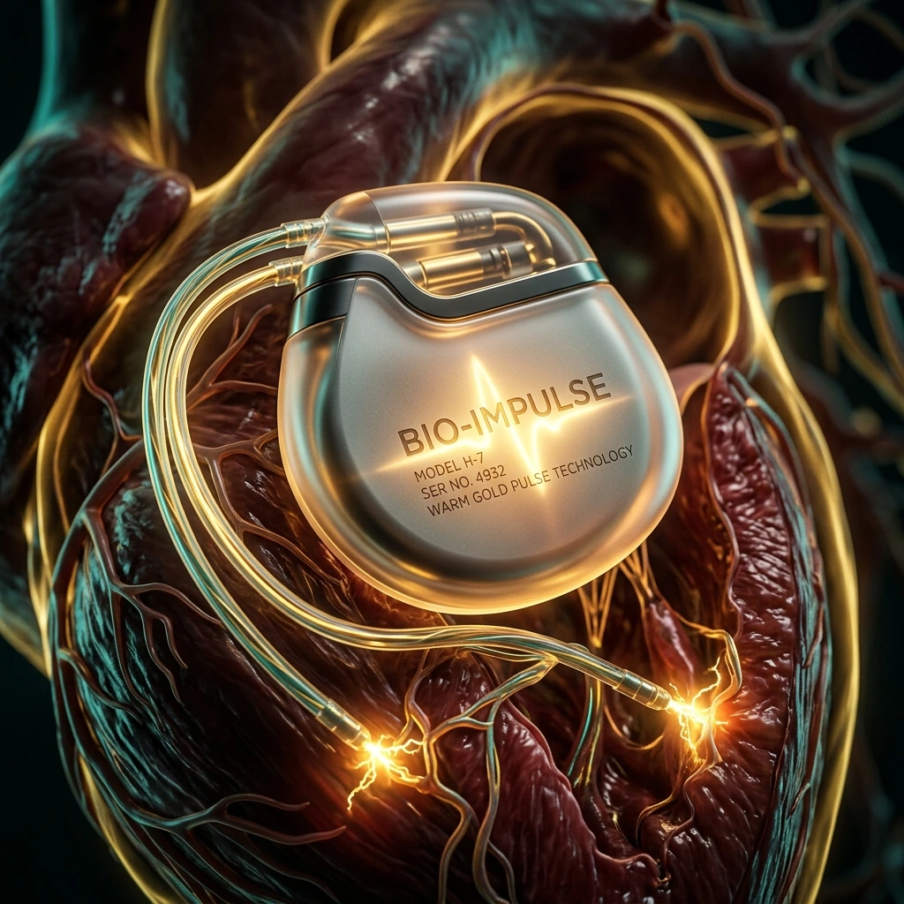

Living with a Pacemaker: Everything You Need to Know — Before and After Implantation
Of all the procedures I perform at Haripriya Heart Care Centre, pacemaker implantation is perhaps the one that most dramatically transforms a patient's quality of life. I have seen people who would faint every time they stood up, who felt exhausted walking from one room to another, who were afraid to be alone — and within 24 hours of receiving a pacemaker, they were sitting up, eating breakfast, and asking when they could go home. The change is that profound. Let me explain everything you need to know about this small but life-changing device.
What Does a Pacemaker Actually Do?
Your heart has its own natural electrical system. Normally, an area of specialised tissue in the upper right chamber — the sinus node — generates an electrical impulse approximately 60 to 100 times every minute. This impulse travels through the heart's conduction system in an organised wave, causing the chambers to contract in a coordinated rhythm and pump blood throughout the body.
When this electrical system malfunctions — whether the sinus node fires too slowly, or the signals are blocked before they reach the lower chambers — the heart rate drops dangerously low. Symptoms include dizziness, near-fainting or fainting (syncope), extreme fatigue, breathlessness, and in severe cases, sudden cardiac arrest. A pacemaker is an electronic device that continuously monitors the heart's electrical activity and, whenever the heart rate falls below a programmed minimum threshold, delivers a small, precisely timed electrical impulse to trigger a heartbeat. It stands guard over your heart rhythm around the clock, every day.
When Is a Pacemaker Needed?
There are several specific conditions for which a pacemaker is medically indicated. The most common are:
- Sick Sinus Syndrome (Sinus Node Dysfunction): The natural pacemaker of the heart — the sinus node — fires too slowly or erratically, causing symptoms of low heart rate. This is the most frequent reason for pacemaker implantation in older adults.
- Atrioventricular (AV) Block: The electrical signal from the upper chambers (atria) is partially or completely blocked before reaching the lower chambers (ventricles). First-degree AV block is usually asymptomatic, but second-degree and third-degree (complete) heart block cause the ventricles to beat far too slowly or independently of the atria, causing severe symptoms and requiring a pacemaker.
- Atrial Fibrillation with Slow Ventricular Rate: In some patients with atrial fibrillation, the ventricular rate is chronically slow — either because of the underlying disease or due to rate-controlling medications — causing fatigue and dizziness.
- After Cardiac Surgery: Sometimes cardiac surgery temporarily or permanently damages the conduction system, making a pacemaker necessary for recovery.
The decision to implant a pacemaker is never taken lightly. I review the full clinical picture — symptoms, ECG findings, Holter monitor recordings, and sometimes an electrophysiology study — before recommending the procedure.
Types of Pacemakers: Choosing the Right Device for You
Modern pacemakers come in several configurations, and selecting the right type depends on your specific heart condition, the chambers affected, and your overall health.
Single-chamber pacemakers have one lead (wire) placed either in the right ventricle or the right atrium. They are simpler devices, suitable when only one chamber requires pacing support. Right ventricular pacing is the most common configuration.
Dual-chamber pacemakers have two leads — one in the right atrium and one in the right ventricle. This design is more physiological because the device can sense and pace both chambers, coordinating their activity to mimic the heart's natural sequence of contraction. Most patients with AV block benefit significantly from dual-chamber pacing, as it preserves the normal timing relationship between the upper and lower chambers and results in better exercise tolerance and cardiac output.
Biventricular pacemakers — Cardiac Resynchronization Therapy (CRT) are specialised devices used for patients with heart failure who also have a condition called bundle branch block, where the two ventricles contract out of synchrony. A CRT device has three leads — right atrium, right ventricle, and a third lead placed in a vein on the left ventricle — and it coordinates the contraction of both ventricles simultaneously. CRT can dramatically improve symptoms, exercise capacity, and even reduce mortality in appropriately selected heart failure patients.
Leadless pacemakers represent one of the most exciting innovations in cardiac device therapy. The Micra TM device by Medtronic, for example, is a tiny, self-contained pacemaker — roughly the size of a vitamin capsule — that is implanted directly inside the right ventricle through a catheter advanced from the leg vein, without any surgical chest incision and without any pacing leads. There is no pocket under the skin, no wire running through a vein, and no visible bump on the chest. This technology eliminates the most common complications of traditional pacemakers — lead fracture, lead dislodgement, and pocket infection — making it particularly valuable for patients with infection risk or who have had previous lead complications. I am pleased to offer leadless pacemaker implantation at Haripriya, a capability not widely available across West UP.

The Implantation Procedure
Pacemaker implantation is performed under local anaesthesia with sedation — you are relaxed and comfortable but not fully unconscious. General anaesthesia is usually not needed. The procedure takes approximately 60 to 90 minutes for a standard dual-chamber device.
I make a small incision — usually 4 to 5 cm long — just below the left collarbone. Through this incision, I access either the subclavian vein or the cephalic vein, which lies just beneath the skin. The pacing leads are then threaded through the vein under continuous X-ray guidance (fluoroscopy) and carefully positioned in the correct location inside the heart chambers. Once the leads are positioned, I check their electrical measurements — sensing, pacing threshold, and impedance — to confirm they are performing optimally.
A small pocket is then created just beneath the skin and subcutaneous fat — not inside the chest cavity — where the pacemaker generator (the box containing the battery and electronics) is placed. The leads are connected to the generator, the device is programmed to your specific heart rate requirements, and the incision is closed with dissolving sutures. No stitches need to be removed later.
Before you leave the procedure room, I perform a final check of the device to confirm it is working perfectly and programmed correctly for your individual needs.
Recovery After Pacemaker Implantation
Most patients stay in hospital for 24 to 48 hours after pacemaker implantation for observation, rhythm monitoring, and wound inspection. You will receive a Pacemaker Identity Card — please keep this with you at all times and present it to any medical professional or airport security officer who needs to know about your device.
The most important restriction in the weeks after implantation concerns the arm on the side of the pacemaker. For 6 weeks, you should avoid raising that arm above your shoulder, lifting heavy weights with it, or making vigorous overhead movements. This restriction is critical — the leads need time to become firmly anchored in the heart wall, and excessive arm movement in the early weeks can dislodge them before they have fully healed into place.
The wound should be kept dry for the first week. Avoid direct water jets on the incision site until it has healed. After about 10 to 14 days, you can shower normally. The small bump visible beneath the skin is the pacemaker generator — it is entirely normal and expected.
Daily Life with a Pacemaker
One of the first things my patients ask is: what can I use and what should I avoid? The good news is that the vast majority of everyday devices and activities are completely safe.
Completely safe: Microwave ovens, televisions, computers, tablets, washing machines, refrigerators, air conditioners, and most household appliances do not affect modern pacemakers. Mobile phones are also safe — the key recommendation is to keep your phone at least 15 cm (about 6 inches) away from the pacemaker, so carry it in a trouser pocket rather than a shirt breast pocket, and hold it to the ear opposite the pacemaker when talking.
Requires caution or avoidance: Certain medical procedures and industrial equipment warrant special attention. MRI scanning is safe only if your pacemaker has been specifically certified as "MRI-conditional" — always check with your cardiologist before scheduling an MRI. Diathermy (electrosurgery) used during surgical procedures can interfere with pacemaker function and must be discussed with the surgical team, who will take precautions. Metal detectors at airports and security checkpoints are safe — walk through them at a normal pace — but do not stand in the detection zone for an extended period, and always show your pacemaker card. Industrial arc welding equipment, large magnets, and certain high-voltage environments should be avoided. If you are unsure about any specific device or environment, call my clinic and ask — it is always better to check.
Driving: After an uncomplicated pacemaker implantation for a bradycardia indication, most patients can resume driving within 1 week. If the pacemaker was implanted after a fainting episode, driving restrictions may be longer as per medical and regulatory guidelines — I will advise you individually based on your specific situation.
Exercise: Physical activity is actively encouraged. After the first 6 weeks, I want my pacemaker patients moving regularly — walking, swimming (after full wound healing), cycling, yoga. Most forms of moderate exercise are not only permitted but beneficial for overall heart health. High-contact sports like rugby or martial arts where a direct blow to the device pocket is possible should be avoided long-term.
Remote Monitoring and Long-Term Follow-Up
Modern pacemakers are remarkable in their ability to transmit data wirelessly. Many devices can be connected to a small home transmitter that periodically sends device diagnostics directly to our clinic — so we can review your pacemaker's performance, check for any arrhythmia episodes, and verify battery status without you needing to come in for every check. This is particularly valuable for elderly patients or those living in smaller towns across the Meerut district or wider West UP region.
Routine in-clinic device checks are scheduled at 1 month after implantation, then at 3 months, and thereafter annually as long as everything is stable. Each check takes about 20 to 30 minutes and provides a comprehensive report on device function, lead performance, and battery life.
Battery Life and Device Replacement
A standard pacemaker battery typically lasts 8 to 12 years, depending on how frequently the device is required to pace and the specific model implanted. As the battery approaches the end of its life, it does not die suddenly — it sends clear warning signals that we detect during routine device interrogation, usually 3 to 6 months before the battery is completely depleted. This gives ample time to plan a generator replacement in a scheduled, unhurried manner.
Generator replacement is a straightforward, brief procedure. I open the original pocket, disconnect the old generator, connect the existing leads (which remain in the heart and do not need replacement), and insert the new generator. The leads are reused in the vast majority of cases. Recovery is much faster than the original implantation — most patients go home the same day or the following morning.
Frequently Asked Questions
Can I use a mobile phone with a pacemaker?
Yes, you can use a mobile phone safely. The key precaution is to keep the phone at least 15 centimetres (about 6 inches) away from the pacemaker generator. In practical terms, this means carrying your phone in a trouser pocket rather than a breast pocket, and holding the phone to the ear on the opposite side from where the pacemaker is implanted. Do not rest your phone directly on your chest for prolonged periods. With these simple precautions, there is no meaningful interference risk from modern smartphones.
Will airport security set off my pacemaker?
Airport metal detectors will detect the metal components of your pacemaker and may trigger an alarm — but they will not harm or reprogram the device. Always carry your Pacemaker Identity Card and present it to security staff before walking through a detector. Walk through at a normal pace rather than lingering in the detection zone. Full-body security scanners at modern airports are also generally safe, but if you are concerned, you have the right to request a manual pat-down search instead. Body scanners used in some airports emit low-energy millimetre waves that do not affect pacemakers.
Can I have an MRI after pacemaker implantation?
This depends entirely on which pacemaker you have. Older pacemakers were not compatible with MRI, and having an MRI could cause the device to malfunction or heat the pacing leads. However, modern "MRI-conditional" pacemakers — which are what we implant at Haripriya — are designed to be safely used in MRI machines under specific conditions, including field strength limits and proper device programming before the scan. Always inform both the MRI facility and your cardiologist before any MRI scan. We will check your device compatibility and, if confirmed safe, programme the pacemaker appropriately for the MRI and reset it afterwards.
How will I know when my pacemaker battery is running low?
You will not feel it directly — pacemakers do not give you any physical sensation as the battery depletes. The battery status is checked at every routine clinic visit through device interrogation. As the battery approaches its end of service, the device enters a special "Elective Replacement Indicator" (ERI) mode that we detect during follow-up checks, typically 3 to 6 months before the battery is fully depleted. This is why annual follow-up appointments are essential — they ensure we catch the ERI in plenty of time to schedule a generator replacement without any urgency or risk.
Can I exercise normally after getting a pacemaker?
Yes — after the initial 6-week recovery period, most patients can and should exercise regularly. The pacemaker is designed to adjust your heart rate with activity; rate-responsive pacemakers have a built-in sensor that increases the pacing rate when you exercise, just as a normal heart rate rises during physical activity. Walking, swimming, cycling, yoga, and light aerobics are all excellent choices. I encourage all my pacemaker patients to be physically active — a sedentary lifestyle is harmful for heart health regardless of having a pacemaker. The main exceptions are high-contact sports where a direct impact to the device pocket is likely, and extremely high-intensity exertion beyond what your underlying heart condition can safely tolerate.
Pacemaker Implantation Available in Meerut
Dr. Hari Om Tyagi performs pacemaker implantations including advanced leadless pacemakers at Haripriya Heart Care Centre. No need to travel to Delhi. OPD: Mon–Sat, 10 AM – 5 PM.
Consult Dr. Hari Om Tyagi →